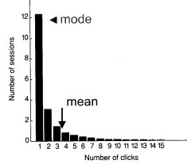

| About IR |
| Editors |
| Author instructions |
| Copyright |
| Author index |
| Subject index |
| Search |
| Reviews |
| Register |
| Home |
Huberman, B.O. The laws of the Web. Cambridge, MA: MIT Press, 2001 (2003). x, 105 p. ISBN 0-262-58225-2 $14.95 (Paperb.)
The confusion over the date of publication in the citation above results from conflicting information on the verso of the title page and the MIT Press Web site: the former gives the copyright date as 2001 and no further information, while the Web site states publication date as April 2003. Publishers seem to be bent, these days, upon making life difficult for cataloguers!
However, to the book. The title is a little misleading, since the author's intention is to explain to a lay audience the power of a particular set of mathematical methods when applied to the study of large distributed systems. He notes that the insights revealed by these methods, '...unfortunately escaped wide attention because of the technical language in which they were couched.' The methods to which Huberman refers are drawn from statistical mechanics and nonlinear dynamics, which are not exactly part of the intellectual armoury of a large majority of the population, so we have to be glad that the author has chosen the ubiquitous character of the Web to present some of the insights.
One drawback, at least for me, is that the 'laws' are not explicitely stated but are presented rather amorphously. They are not emphasised by type style or bullet point, nor is there a summary page that sets them out. My first attempt to review the book involved expressing the laws clearly, but I found this impossible to do. Huberman explains the laws very well, shows the background and explains the implications, but in the majority of cases does not present the law in a way that enables one (or at least me!) to extract 'law-like' statements. So, I have to adopt the same approach as the author and set out the laws in a less direct manner.
Huberman points out that two law-like characteristics of the Web are generally well known: i.e., '...that the distribution of pages and links per Web site follows a universal and lawful behavior, with few sites having enormous numbers of pages and many having a few.' and '...the congestion created by surfers on the Web gives rise to predictable Internet "storms" that suddenly appear and subside in statistically meaningful patterns.'
Beyond these characteristics of the 'ecology of the Web', Huberman sets out additional laws in six chapters. First, he discusses the nature of the distribution referred to above, which is described as a 'power law distribution'. The first Law of the Web, which is the only one I am able to express succinctly, perhaps because it does involve a mathematical formulation, can be expressed as:
A power law distribution 'describes the number of pages per site, and also the number of links emerging from a site or coming to it.' That is, 'the probability of finding a Web site with a given number of pages n, is proportional to 1/nß, where ß is a number greater than or equal to 1'.
One interesting by-product of the power law distribution is that the distribution looks the same regardless of the range of pages to which it is applied, which means 'that if one can determine the distribution of pages per site for a range of pages, one can then predict what the distribution will be for another range of pages.'
The second law is not so readily apparent from the text, but is explained by another writer as:
...the World Wide Web, has a small world topology... Web sites tend to be clustered, but at the same time only a few links separate any one site from any other. This topology has implications for the way users surf the Web and the ease with which they gather information. The link structure additionally provides information about the underlying relationship between people, their interests, and communities. (Adamic, L. The small world Web. 1999.)
Just how small is quite surprising, given the size of the Web. Adamic's study found that the number was four, while another study of the links between pages found that the small number was sixteen.
As both Adamic and Huberman note, it is this 'small world' character that is being exploited to build better search engines, and, clearly, Google uses this characteristic in its search algorithms.
Law number three has to do with surfing behaviour and, again, is not clearly expressed. My best effort is that the probability that a user will visit a given number of pages within any site is determined by the same mathematical expression that governs Brownian motion.
Brownian motion is the phenomenon that can be observed most easily by observing dust motes in a beam of sunlight - they appear to dance in a completely random fashion, caused by their collisions with the air molecules among which they ride. The mathematical expression referred to fits the distribution shown in the figure, which was obtained by Huberman in an experiment involving millions of requests to Web sites.
Interestingly, further research has shown that, in different enquiry domains, the curve as a whole shifts to the right of the position shown here, but the curve remains the same. The implication of this law is that Web users show a highly regular and predictable behaviour in their use of Web sites, which, according to Huberman, is determined by the 'value' they find with each click they make. Clearly, if the owners of a site collect the relevant information on the way the site is used and are prepared to 'add value' to the site, they may be able to move the curve further to the right, signifying that the most frequently occurring value for the number of clicks increases. In the diagram shown, the modal value is one click - a site with greater value to the user might increase that modal value to 2, 3, 4 or higher.
The fourth law concerns congestion and the phenomenon of Internet 'storms', which appear to be a consequence of 'co-operative' behaviour: from a game-theoretic perspective, in trying to maximise the speed at which they are able to use the Web, users through the decisions they make to interrupt a slow connection or download generate activity that appears to be the result of collaboration. The fourth law can be expressed as: the probability that a user will experience congestion on the Internet has a highly-skewed distribution, because the behaviour of users results in 'social co-operation' to minimize the effects of congestion.
Of course, the co-operation is not deliberate and conscious: the phenomenon occurs because if a slow connection is experienced people tend to give up and try again later - as more and more people do this, the congestion dies down. This section of the book is bedevilled by the results of poor proof-reading - on two pages there are three missing words: it isn't too difficult to understand what the words should be, but it does hold up one's reading of the text.
The laws of the Web, as presented here, seem to me to reflect quantum physics rather than the old mechanistic view of the universe - this universe is highly probabilistic.
Professor T.D. Wilson
Editor-in-Chief
July 2003
How to cite this review
Wilson, T.D. (2003) Review of: Huberman, B.O. The laws of the Web. Cambridge, MA: MIT Press, 2001. Information Research, 9(1), review no. R109 [Available at: http://informationr.net/ir/reviews/revs109.html]